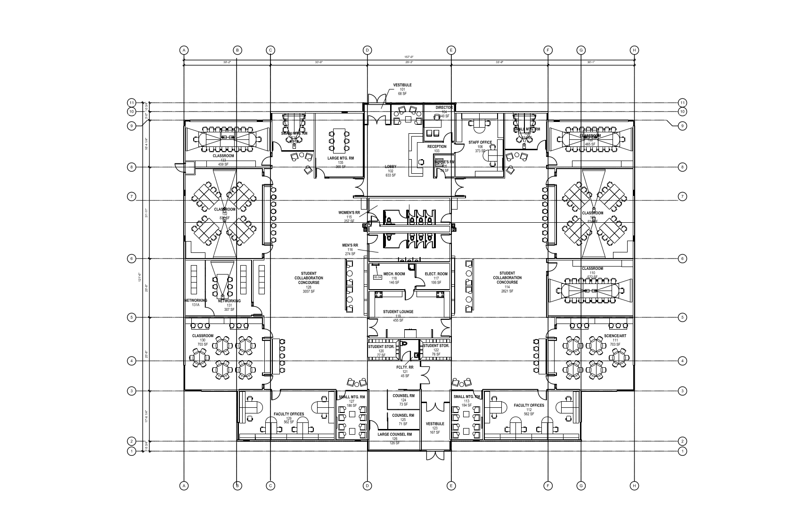

Currently, we are located in Murray, Utah, adjacent to a multitude of amenities including: TRAX and Frontrunner stations, Intermountain Healthcare Facilities, Murray Park, and more! This location provides good access for numerous actvities and field trips. Our address is: 120 W Vine St #200, Murray, UT 84107.
Our future location will be in Daybreak, adjacent to the South Jordan Parkway TRAX station. It is a 4 stage project, with plans for multiple buildings, green spaces, and other daybreak amenities.
The Wasatch Institute of Technology building was designed in partnership with the award-winning architects at Method Studio. Our unique space supports Next Generation Education with its flexible room configurations, smaller classrooms, and abundant opportunities for collaboration. Our bilding's exturior pays homage to the area's mining history, yet affords breathtaking views of both the Wasatch and Oquirrh mountains.
